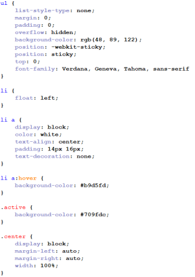

If you want to make a navbar like shown below u should folow this Tutorial

u need to add this between the body. See picture below

u need to add this in ur +Stylesheet.css
this is the file where u can style ur website. If u dont know how to add this u should check our tutorial u can find that in the navigation bar above
